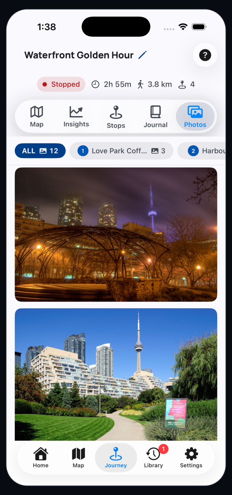
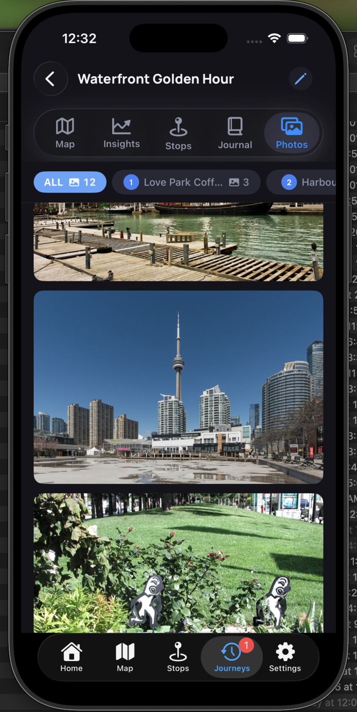

The first chip shows the full photo count for the journey.
Photos Help
Browse the visual memory of a journey.
Photos shows every image attached to the journey and lets you filter the gallery by stop.


What You Can See Here
Use stop chips to see only photos from a specific place.
The gallery uses large images so visual memories are easy to scan.
Photos stay connected to the stops where they were captured or attached.
Browse Photos
Move between all photos and stop-specific sets.
Use the gallery when you want to remember the journey visually before editing notes or sharing a memory.
1Start with All
All shows the complete journey photo set in one scrollable gallery.
2Filter by stop
Tap a stop chip to focus on the photos attached to that one place.
3Open a photo
Tap a photo when you need a closer look or want to manage it from the app.
4Return to context
Use Stops or Journal when you want to add meaning around the photo.
Questions
Common Photos questions
Why do photos appear under stops?
DayMotion keeps photos tied to places so the journey stays organized by where things happened.
Can I see every image at once?
Yes. Use the All chip to return to the complete journey gallery.
Are these shared automatically?
No. Photos remain in the journey until you choose a sharing or export action.